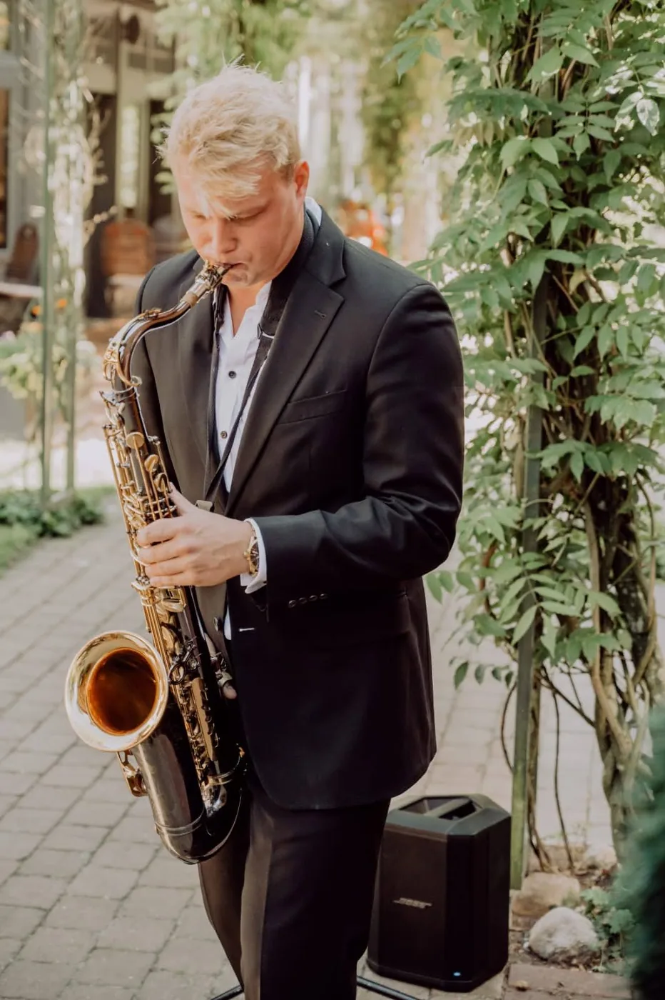
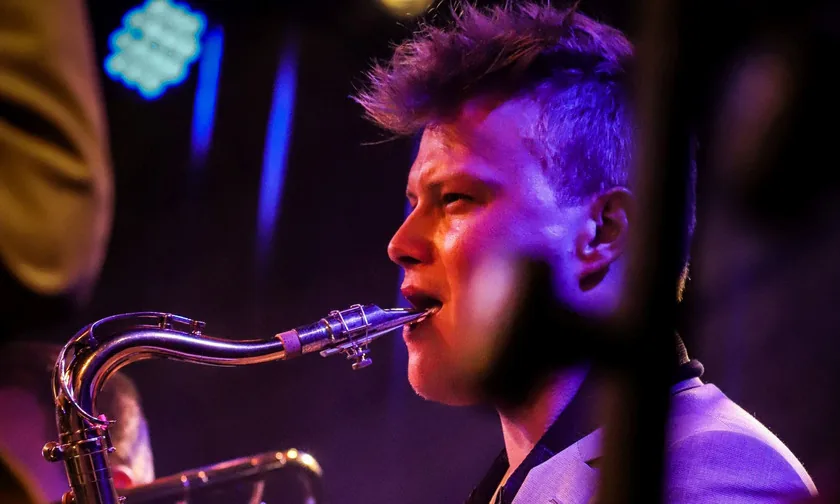

Empfangs-Sets
Live-Saxophon für den Empfang, wahlweise zu modernen House-Klängen im Ibiza-Style oder mit Jazz-Standards und zeitlosen Pop-Klassikern.
Saxophonist · für Unternehmen, Agenturen & besondere Anlässe
Felix Tönnies, studierter Jazz/Pop-Saxophonist: als eleganter Solo-Act für Empfang und Dinner oder mit DJ für den Höhepunkt des Abends.
Referenzen
Anlässe
Jedes Engagement beginnt mit einem Gespräch. Daraus entsteht ein musikalisches Konzept, das zu Anlass, Gästen und Dramaturgie des Abends passt.
Empfang, Gala oder Sommerfest: repräsentativ und stilvoll.
Von der Trauung bis zur Party: Wunschsongs zum Einzug, Musik zum Anstoßen, volle Tanzfläche am Abend.
DJ + Sax für Clubs, Beach-Clubs, Hotels und Festivals.
Geburtstag oder Jubiläum: Live-Musik, die Ihre Gäste begeistert.


Formate

Live-Saxophon für den Empfang, wahlweise zu modernen House-Klängen im Ibiza-Style oder mit Jazz-Standards und zeitlosen Pop-Klassikern.

Ein musikalisches Gesamterlebnis aus DJ-Performance und Live-Saxophon, kombiniert mit professioneller Eventtechnik und individueller Planung. Die Live-Sets verteilen wir passend über den Abend und spielen sie je nach Stimmung Ihrer Gäste; der DJ spielt davor, dazwischen und danach. Optional mit Djembe zubuchbar.

Vom eleganten Duo bis zum konzertanten Sextett: alle Besetzungen im Überblick.
Hörproben & Videos
Ein Klick genügt: Vimeo und YouTube laden die Videos erst nach Ihrer Zustimmung (Datenschutz).

Aus den Bewertungen
„Es war für uns genau die richtige Entscheidung, Felix Tönnies für unser Firmenevent zu buchen! Seine Live-Performance war überragend – eine Garantie für einen gelungenen Abend.“
„Die Kommunikation verlief völlig reibungslos, die Einbettung ins Programm war super. Künstlerische Qualität: Schulnote 1+, absolut weiterempfehlenswert.“
„Super Musik, er war in unserer Familie voll integriert, sogar bei den Kindern beliebt. Toller Künstler, jederzeit zu empfehlen – auch als Mensch.“
„Felix hat dem ganzen Nachmittag das besondere Flair verliehen. Immer wieder gern – es war ein Highlight des Tages.“
Bewertungen auf eventpeppers Google-Bewertungen
Regelmäßige nationale und internationale Auftritte mit New City Beats. Internationale Corporate-Auftritte u. a. in Italien, Spanien, Österreich, der Schweiz und Ägypten.
Anfrage
In zwei Minuten zur unverbindlichen Anfrage. In der Regel erhalten Sie innerhalb von 24 Stunden ein individuelles Angebot.
Beliebte Termine (Samstage und die Monate Mai bis September) sind oft mehr als ein Jahr im Voraus vergeben. Eine frühe Anfrage lohnt sich; kurzfristige Termine gerne auf Anfrage.
Oder direkt: info@saxofaxo.com · +49 173 926 5526